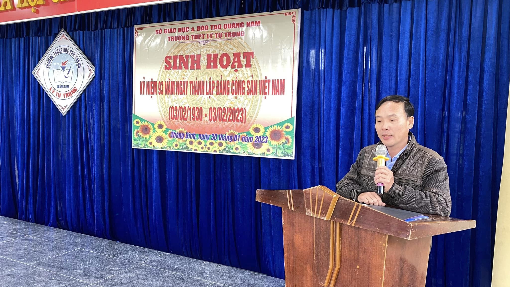

Hòa trong niềm tự hào đó, sáng thứ hai, ngày 30/01/2023, Trường THPT Lý Tự Trọng tổ chức chương trình sinh hoạt kỉ niệm 93 năm ngày thành lập Đảng Cộng Sản Việt Nam. Tại buổi sinh hoạt, thầy giáo Mai Vũ Xuân Dân – Phó Bí thư Chi bộ - Hiệu trưởng nhà trường đã báo cáo quá trình ra đời, ý nghĩa và vai trò của Đảng Cộng Sản Việt Nam từ khi thành lập cho đến nay. Đồng thời trong bài báo cáo, thầy cũng đã nhấn mạnh về công tác phát triển Đảng viên trong học sinh, đưa ra các yêu cầu cần đạt được của người Đoàn viên ưu tú để có cơ hội đứng vào hàng ngũ của Đảng Cộng sản Việt Nam.
Một số hình ảnh nổi bật tại buổi sinh hoạt:

( Thầy giáo Mai Vũ Xuân Dân – Phó Bí thư Chi bộ - Hiệu trưởng nhà trường báo cáo truyền thống ngày thành lập Đảng)
Trong năm học 2021 – 2022, Chi bộ Trường THPT Lý Tự Trọng cũng đã kết nạp Đảng cho đồng chí Trần Thị Huệ - Bí thư Chi đoàn 12/3 với những thành tích xuất sắc trên phương diện học tập và hoạt động ngoài giờ lên lớp.